Sistem Basisdata - MySQL/MariaDB
Sistem basisdata open source yang paling populer
Sejarah:
. Dikembangkan oleh Michael Widenius &
David Axmark pada tahun 1994
. Diakusisi oleh Sun (sekarang dikenal sebagai
Oracle) pada tahun 2008
(http://www.mysql.com/)
Cross Platform
- (Free) untuk Windows, Linux, Mac dan Unix ->
community edition
- Supported version -> commercial customers
PHPMyAdmin
1. Dibuat khusus untuk mengelola basisdata
MySQL/MariaDB
2. Terintegrasi dalam instalasi XAMPP
Membuat (Create) Basisdata

Membuat (Create) Tabel
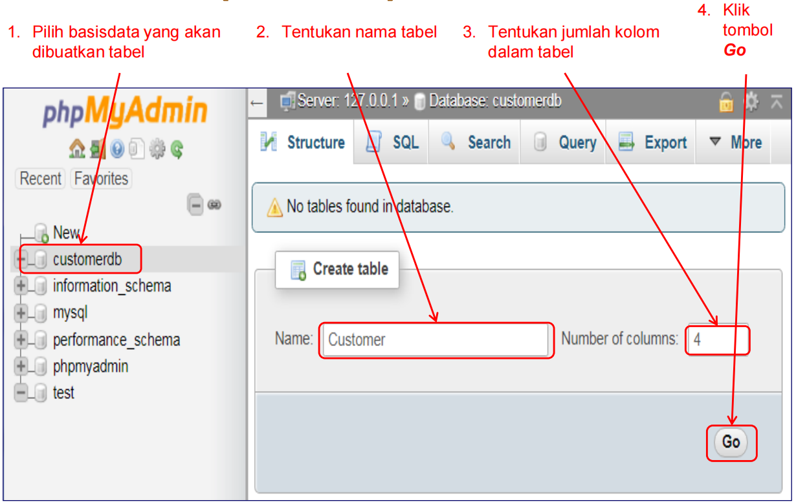Membuat (Create) Tabel lajutan 2
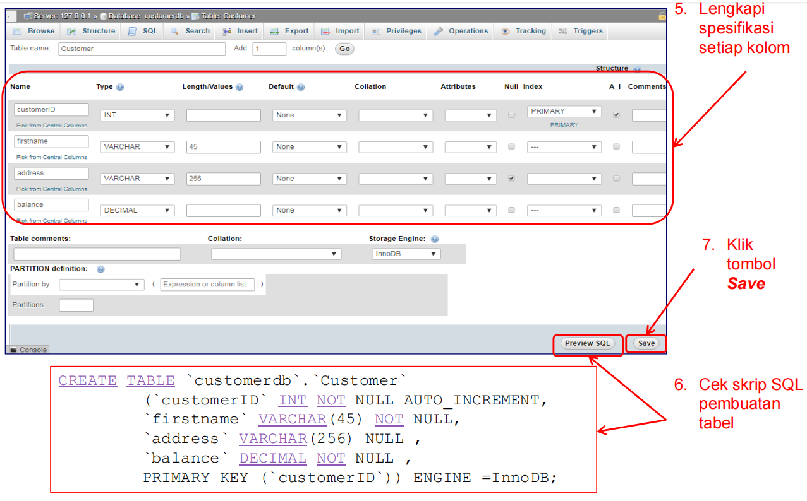Membuat (Create) Tabel lanjut 3

Memasukkan (Insert) Data Tabel
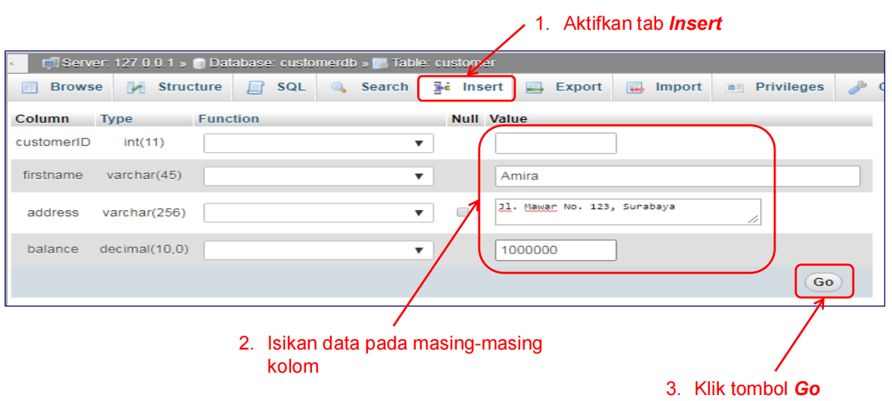 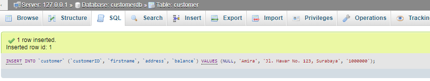Memasukkan (Insert) Data Tabel lanjut 2
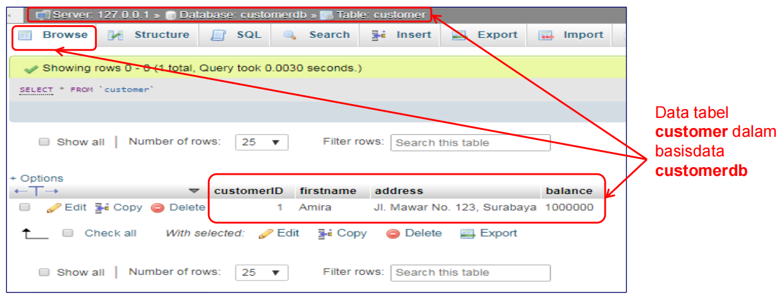Akun dan Hak Akses
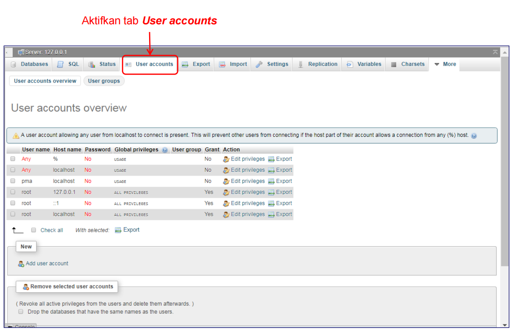Structured Query Language (SQL)
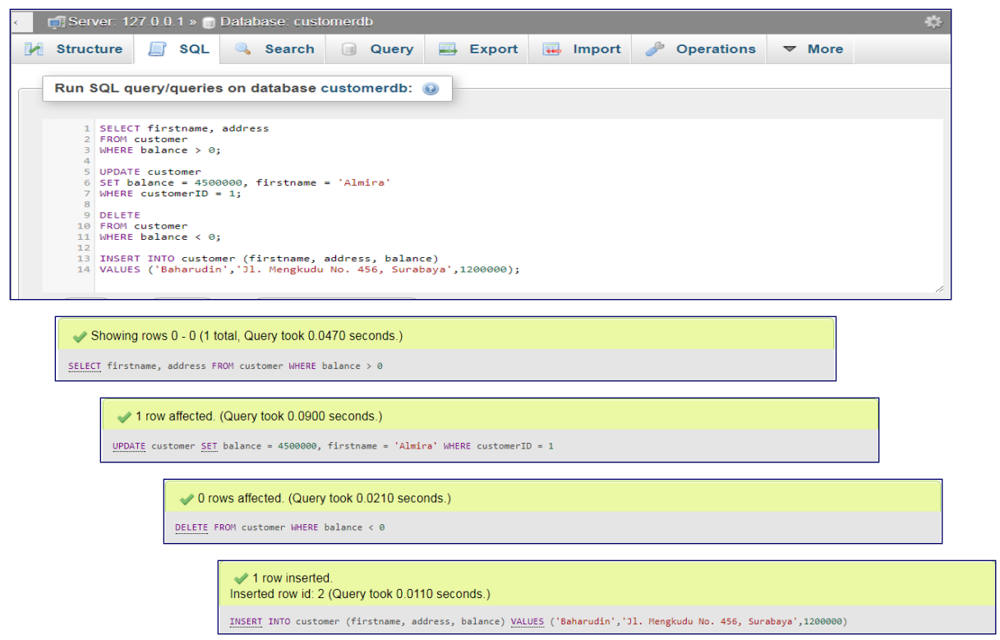Structured Query Language (SQL) lanjut 2

Aplikasi Web & Implementasi Basisdata
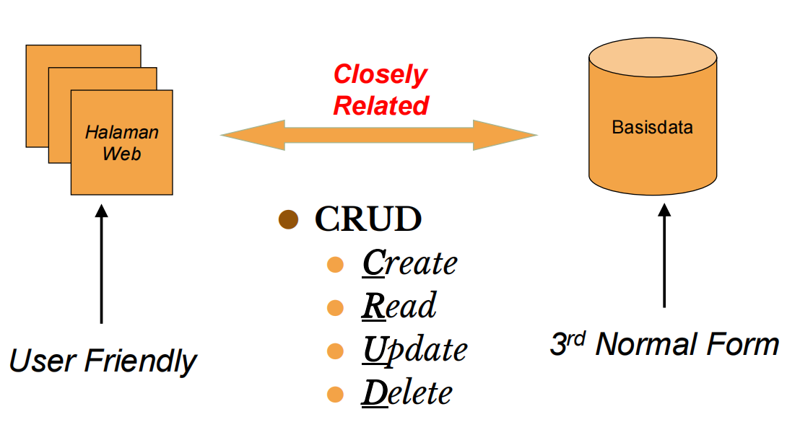PHP Data Objects (PDO)
http://php.net/manual/en/book.pdo.phpMerupakan Object-Oriented extension library -> tersedia pada PHP versi 5.1 dan setelahnya
Digunakan untuk melakukan akses ke sistem basisdata
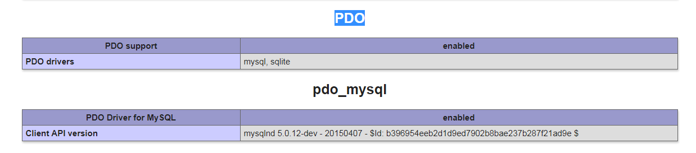Koneksi Basisdata - Halaman Web
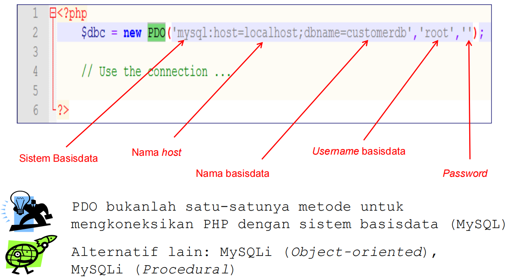PDO Query
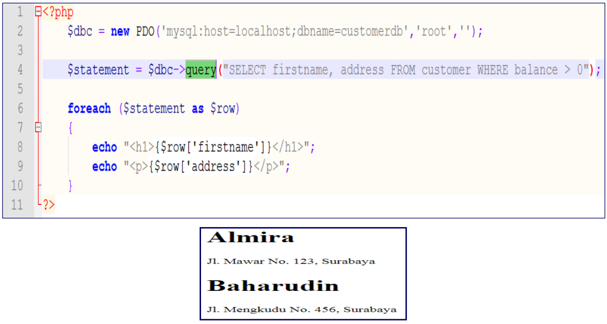Serangan SQL Injection
hati hati denagan serangan ini SQL Injection contoh yang harus di sembunyikan
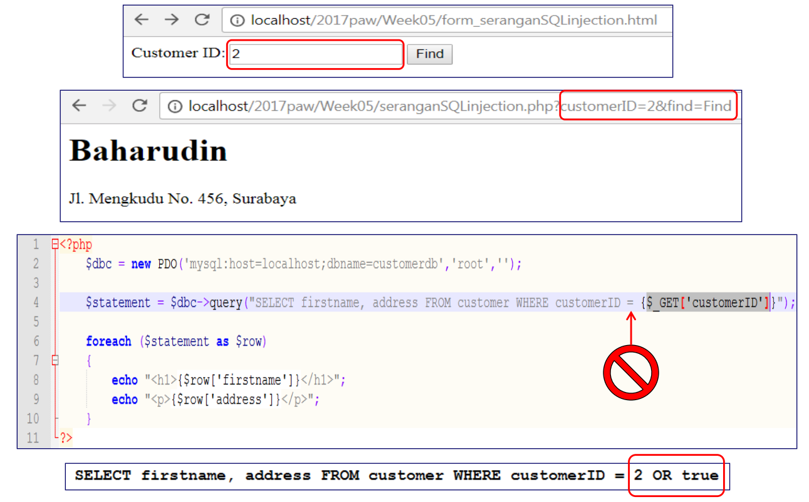PDO Prepared Statement
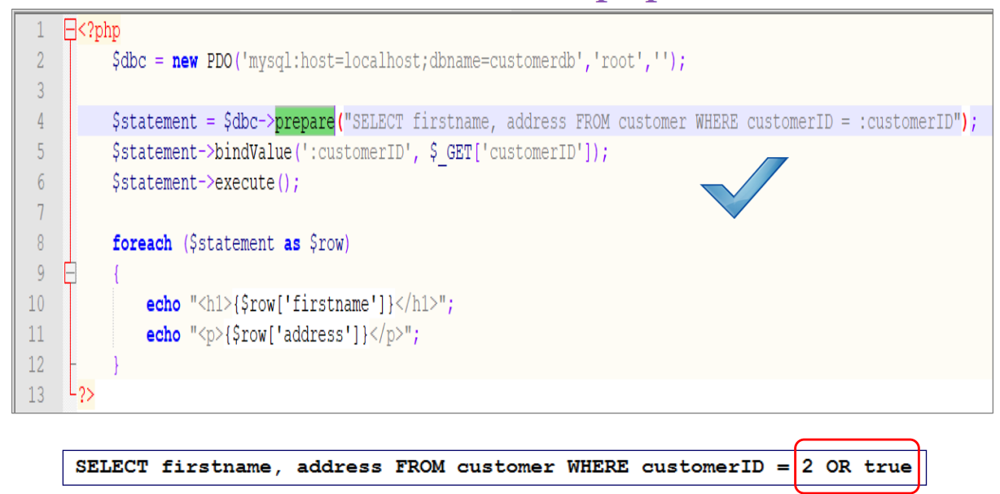PDO Prepared Statement: INSERT
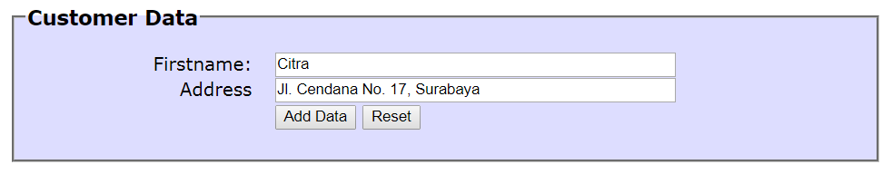 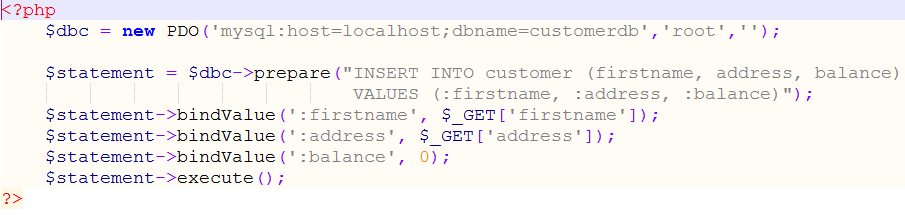 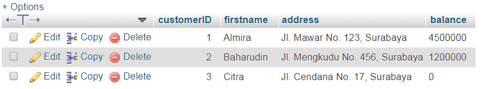PDO Prepared Statement: UPDATE, DELETE
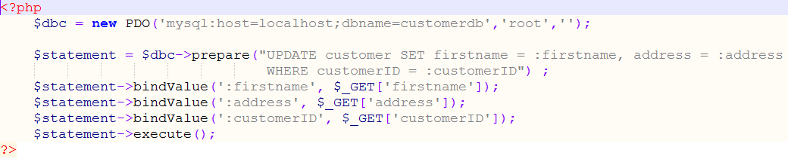 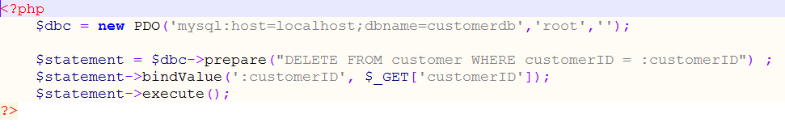Menampilkan Pesan Error
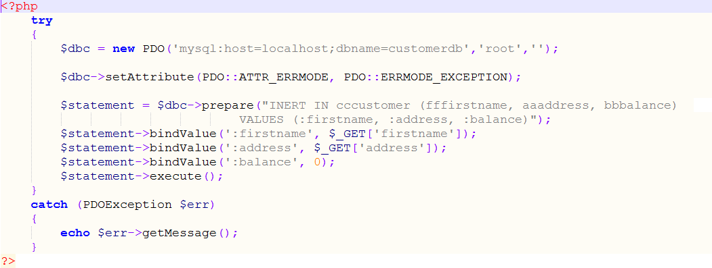 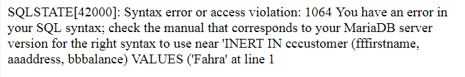PDO Error Mode secara default adalah ERRMODE_SILENT (silently ignore all database errors)
Menampilkan Data Foreign Keys
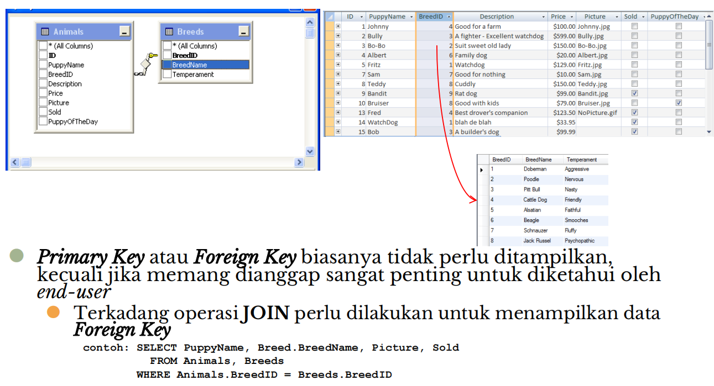kelanjutan materi -->